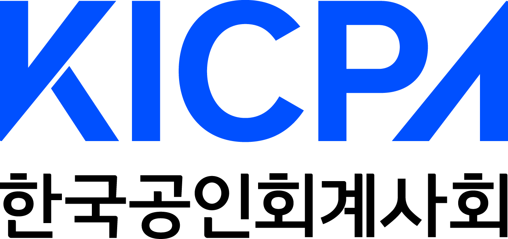

"회계사무소와 회계법인은 목적지가 아닙니다."
기업과 사회를 이해하는 가장 강력한 출발점입니다.
본 과정은 교육부와 대한상공회의소가 추진하는 「직업계고 채용연계형 직무교육과정」의 일환으로, 한국공인회계사회와 조세통람이 공동으로 운영하는 회계·세무 분야 실무형 인재양성 프로그램입니다.
AI 기술의 발전으로 데이터는 더욱 쉽게 생성되고 활용되고 있습니다.
그러나 기업이 어떻게 돈을 벌고 성장하는지 이해하고, 거래와 재무 데이터를 해석하며, 의사결정을 지원하는 역량은 여전히 사람의 몫입니다.
회계·세무는 기업의 자금 흐름, 수익 구조, 세금, 투자, 경영 의사결정을 이해하는 핵심 기초 역량입니다. 취업을 하든 창업을 하든 비즈니스의 원리를 꿰뚫어 볼 수 있는 평생의 가장 강력한 비즈니스 언어가 되어 줍니다.
사람은 평생 세금과 회계를 벗어날 수 없습니다. 첫 월급을 받을 때도, 주식에 투자할 때도, 창업을 할 때도, 기업에 입사할 때도 회계와 세무에 대한 이해는 살아가는 매 순간에 강력한 무기가 되어 줍니다.
교육부·대한상공회의소가 승인한 직업계고 채용연계형 직무교육과정입니다.
회계·세무 실무, ERP 활용, AI 기반 업무 활용 역량을 학습하고,
교육 수료 후 AT 자격 취득과 회계사무소 및 회계법인 채용 연계를 지원합니다.
전국 직업계고 3학년 재학생 25명 선발
회계·세무 관련 학과 또는 유사 전공 학생을 대상으로 운영되는 전공연계 과정입니다.
접수: 2026. 05. 11 ~ 2026. 06. 15 (최종마감)
교육: 2026. 08. 03 ~ 2026. 10. 16 (350시간 / 3개월)
장소: 조세통람 교육장(서울 중구)
*기숙사 미제공
한국공인회계사회가 현장 수요를 반영해 설계한 교육과정
6월 15일 원서 접수 마감 이후 차수별 면접 및 합격 통보가 순차적으로 이루어집니다.
학생 직무수행계획서 및 서류 심사가 우선 적용됩니다.
2026.05.26 ~ 06.17
대상자에게 개별 메시지 및 유선 안내를 제공합니다.
2026.06.26
공식 선발이 완료된 최종 합격자 25명의 개별 통보일입니다.
2026.08.03
전체 소집 오리엔테이션 및 본격적인 훈련 시작일입니다.
2026.08.03 ~ 10.16
3개월(350시간) 동안 전방위적인 집중 실무 훈련을 전개합니다.
본 과정은 학생들이 회계·세무 실무를 통해 기업과 사회를 이해하는 역량을 갖추고, 첫 번째 실무경력을 시작할 수 있도록 지원하는 인재양성 과정입니다.
회계사무소와 회계법인은 학생들의 최종 목적지가 아닙니다.
더 넓은 미래와 다양한 가능성으로 나아가기 위한 출발점입니다.
한국공인회계사회는 학생들이 안정적인 첫 경력을 시작하고 지속적으로 성장할 수 있도록 늘 곁에서 든든하게 함께하겠습니다.
학생과 대화할 때 마주하는 현실적인 편견과 오해들,
클릭을 통해 공인된 팩트와 명쾌한 해결 비전을 제시해 주세요.
회계사무소에서는 여러 기업의 회계·세무 업무를 지원하며 실무 경험을 쌓게 됩니다. 일반 기업의 신입사원이 특정 부서의 업무를 중심으로 경험하는 것과 달리, 회계사무소에서는 다양한 업종의 기업을 접하며 회계·세무 업무 전반을 이해할 수 있습니다. 사회초년생이 실무 역량과 업무 이해도를 빠르게 쌓을 수 있는 좋은 출발점이 될 수 있습니다.
회계사무소나 회계법인에서 경력을 쌓으며 고객 기업의 회계·세무 업무를 지원하는 실무 전문가로 성장할 수 있습니다. 경험이 축적될수록 보다 복잡한 업무를 담당하고 조직 내에서 중요한 역할을 수행할 수 있습니다.
회계사무소에서 다양한 기업의 회계·세무 업무를 경험하면 기업의 재무·회계 업무 전반에 대한 이해를 넓힐 수 있습니다. 이러한 경험은 향후 일반 기업의 회계, 재무, 경영지원 분야로 진출하는 데 도움이 될 수 있습니다.
실무 경험을 바탕으로 공인회계사 등 전문 자격에 도전하거나, 선취업 후진학을 통해 학업과 경력을 함께 이어갈 수 있습니다. 현장 경험은 향후 진로를 구체적으로 설계하는 데 도움이 될 수 있습니다.
AI는 반복적인 업무를 빠르게 처리할 수 있지만, 결과를 검토하고 상황에 맞게 판단하는 과정까지 모두 대신할 수는 없습니다.
회계·세무는 기업의 돈의 흐름과 경영활동을 이해하는 분야입니다. 이러한 이해를 바탕으로 데이터를 해석하고 활용하는 능력은 앞으로도 다양한 직무에서 활용될 수 있습니다.
회계·세무 지식과 AI 활용 능력을 함께 갖춘다면 변화하는 업무 환경에 보다 유연하게 대응할 수 있습니다.